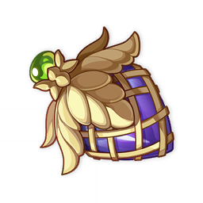

Увеличивает урон реакций Бутонизация, Вегетация и Цветение экипированного этим набором персонажа на 40%.
Кроме того, активация реакций Бутонизация, Вегетация и Цветение персонажем, экипированным этим набором персонажем, усилит этот эффект на 25%.
Каждое суммирование длится 10 сек. Эффект складывается до 4 раз, может возникнуть раз в 1 сек. и активируется, даже если экипированный этим набором персонаж не активен.

© 2022. «Cognosphere». Все права защищены